Overall, the objective of the TechnoEdge sales dataset is to provide valuable insights into the company's sales performance and help identify areas for improvement, so that the company can optimize its sales and marketing strategies and improve its bottom line.
Used Power Query for Data Cleaning.Visuals Used: Stacked Column Charts,Pie Charts, Tables, Bookmarks etc.
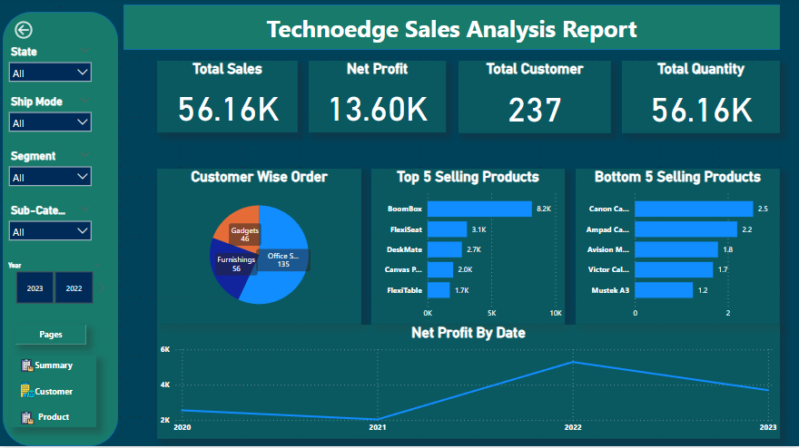
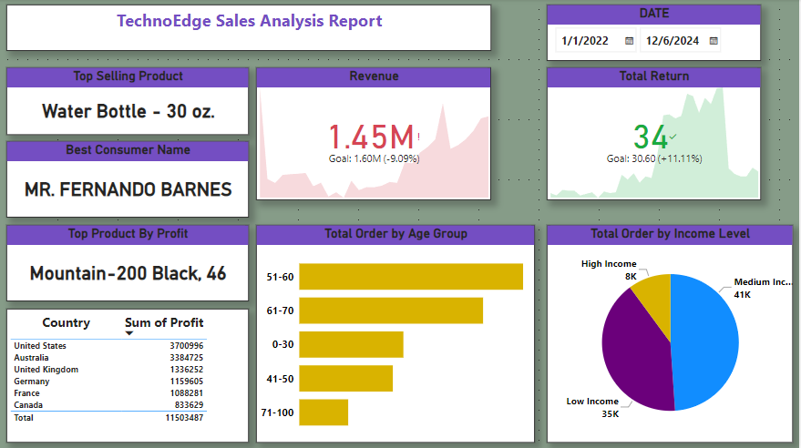
TechnoEdge company has provided a dataset that includes various tables such as Calendar, Customers, Product Categories, Product Sub-Categories, Products, Returns, Territories, and Sales from 2022-2024. The purpose of analyzing this dataset is to gain insights and improve business operations. Using DAX Power BI, we can create interactive reports and visualizations to analyze sales trends, customer behavior, product performance, and returns.
This will help in making data-driven decisions and improving business profitability.
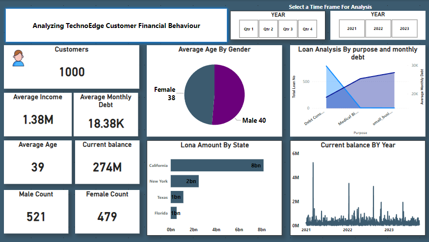
Using the TechnoEdge banking dataset, visualize and analyze key metrics such as customer information (name, age, gender), loan details (amount, status), and daterelated information (month, quarter, fiscal year) using interactive visuals in Power BI.
Gain insights into customers, loans, and trends for informed decision-making and strategic planning.
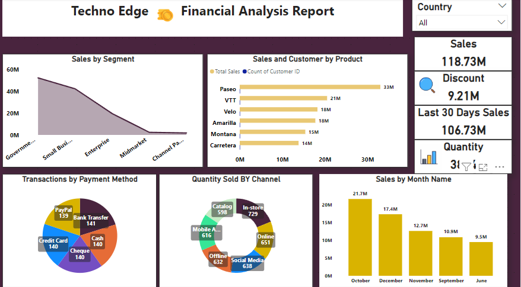
TechnoEdge's Power BI project overview provides an interactive snapshot of finance data, including sales, profit, and transaction details.
Visuals such as bar charts and tables display key metrics by segments, products, and countries, allowing for easy analysis and decision-making.
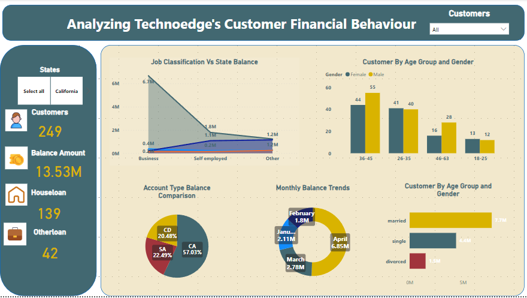
TechnoEdge's Power BI project overview provides an interactive snapshot of finance data, including sales, profit, and transaction details.
Visuals such as bar charts and tables display key metrics by segments, products, and countries, allowing for easy analysis and decision-making.
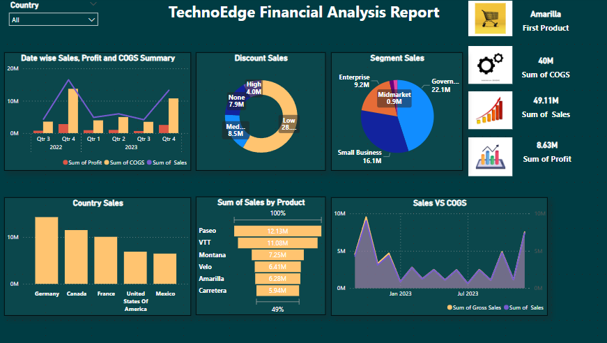
The TechnoEdge Financial Details dataset contains information related to the sales of different products in various countries and segments.
It includes data on the number of units sold, manufacturing and sale price, gross sales, discounts, COGS, profit, and date of sale. The dataset is organized by month and discount band. We need to Explore TechnoEdge Financial Performance with Interactive Data Analysis on Sales, Profit, and Discounts Across Product Segments and Countries.
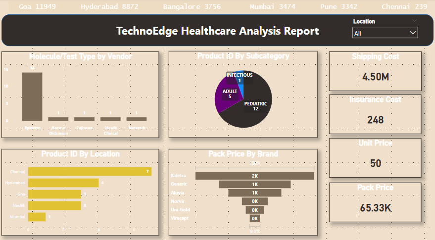
The TechnoEdge healthcare dataset includes product details such as IDs, categories, vendors, prices, and packaging. It also provides information on molecules/test types, brands, doses, dosage forms, shipping and insurance costs, and manufacturer location.
It enables analysis of pricing trends, vendor and manufacturer performance, and the impact of packaging and weight on shipping and insurance costs.
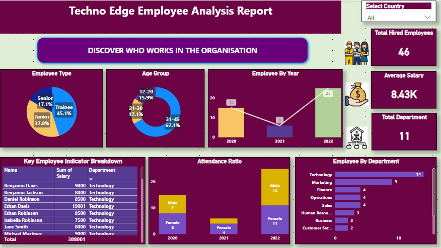
TechnoEdge is a company with employees whose details are stored in the given dataset.
The dataset includes various employee attributes such as employee ID, name, position, department, and date of birth, date of joining, experience years, phone number, email, address, salary, gender, marital status, nationality, country, emergency contact details, education qualifications, skills, benefits, and attendance details. With this information, TechnoEdge can track and manage their workforce effectively.
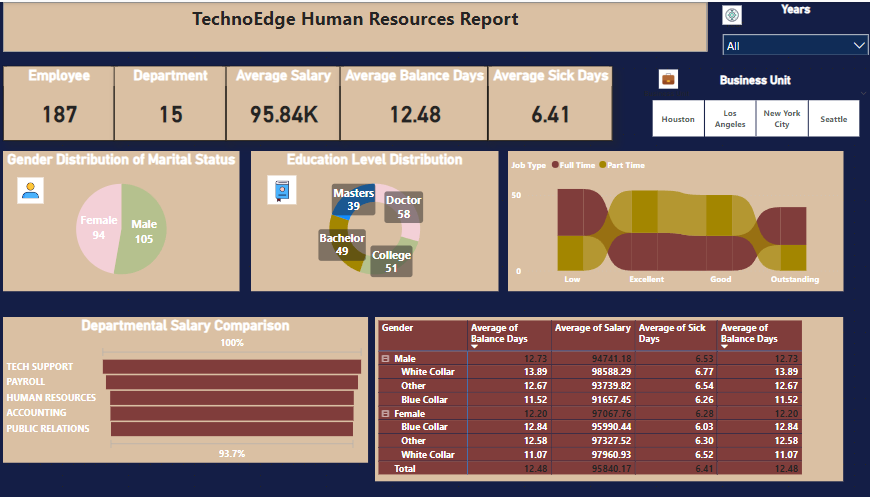
Explored TechnoEdge Human Resources Employee Details dataset through interactive visualizations showcasing employee demographics, job positions, salaries, and performance ratings.
Gain insights on employee retention, promotion patterns, and job satisfaction levels
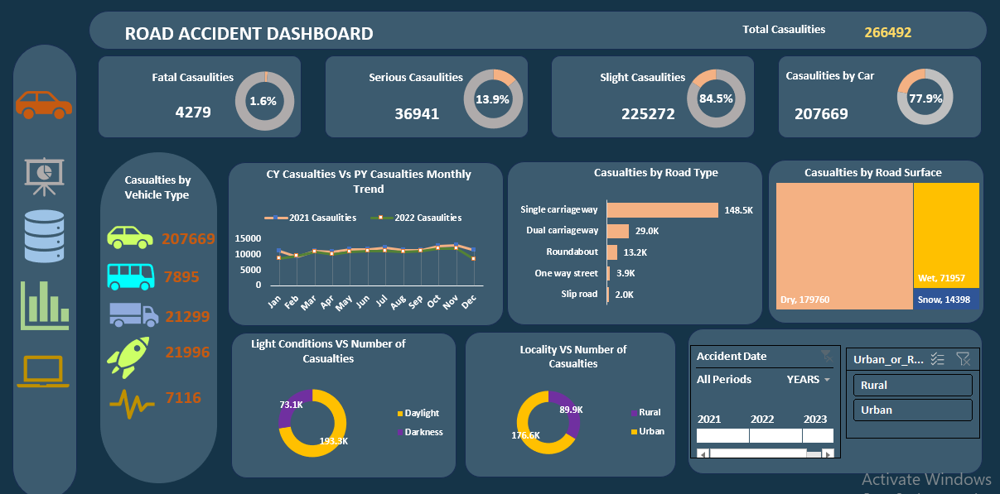
Client want to create road accident Dashboard for year 2021 and 2022. So that they can have insight on various KPI'S.
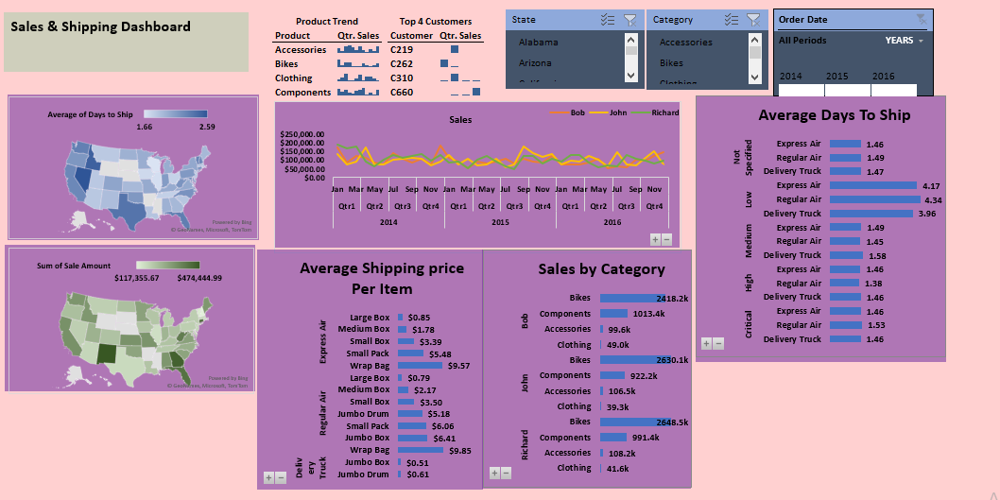
Created a Sales and Shipping Dashboard for year 2016 and 2017 using Power Query and Power Pivot.